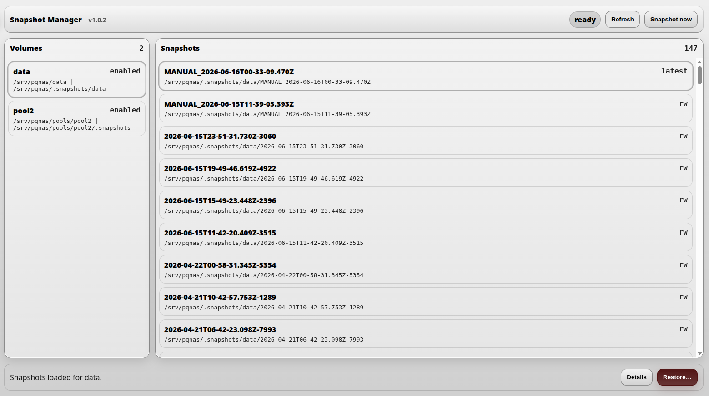
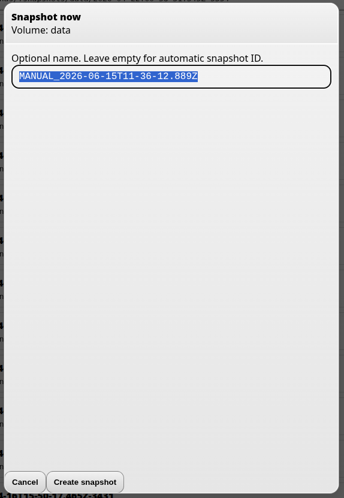
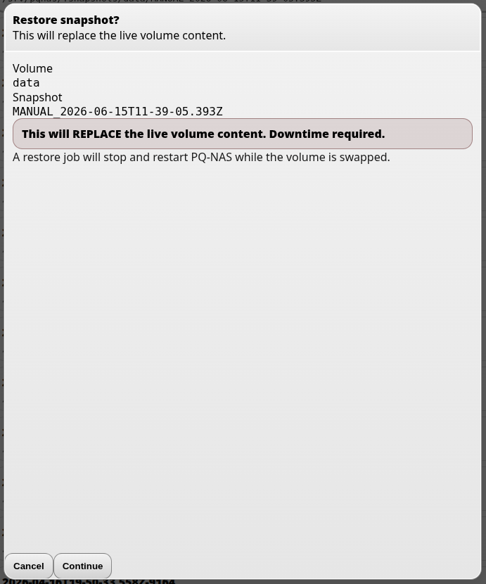

Snapshots
DNA-Nexus / PQ-NAS can be configured to create filesystem snapshots for configured Btrfs data volumes. A snapshot stores the state of the selected Btrfs subvolume at a specific moment. In the default configuration, this means the PQ-NAS data volume, not the entire Linux operating system.
Snapshots are useful when you want a fast rollback point for stored NAS data. If files are accidentally changed, deleted or damaged, the selected data volume can be restored back to an earlier working state.

What snapshots include
Snapshots are created from the configured source subvolume. In the default configuration, this is the PQ-NAS data volume:
/srv/pqnas/dataThe snapshots themselves are stored under the configured snapshot root, for example:
/srv/pqnas/.snapshots/data
In the default configuration, snapshots cover the PQ-NAS data root at
/srv/pqnas/data. This includes data stored under that root, such as
user data, workspaces, avatars and application data files located there.
Snapshots do not automatically include the whole Linux operating system, server binaries, installed application packages, static runtime files or configuration files stored outside the configured Btrfs subvolume.
Requirements
In DNA-Nexus / PQ-NAS, snapshots are available when the underlying storage uses Btrfs and the configured data volume is a Btrfs subvolume.
Enabling snapshots
Snapshot support can be enabled from the administrator settings under the Snapshots section: Administrator settings → Snapshots.
Depending on configuration, snapshots can be created automatically on a schedule. Even when automatic snapshots are not enabled, the administrator can still create a snapshot manually at any time.
Creating a manual snapshot
To create a snapshot manually, open the Snapshots page and click Create snapshot now.

A confirmation dialog is shown with the snapshot name. After confirming, the snapshot is created immediately.
Restoring a snapshot
To restore an older snapshot, select the desired snapshot from the list based on its timestamp and click Restore.

A confirmation prompt is shown before the restore begins. After you accept it, the restore process starts.
During snapshot restore, the server software restarts automatically. In most cases, users will only notice that the service is unavailable for a few seconds.